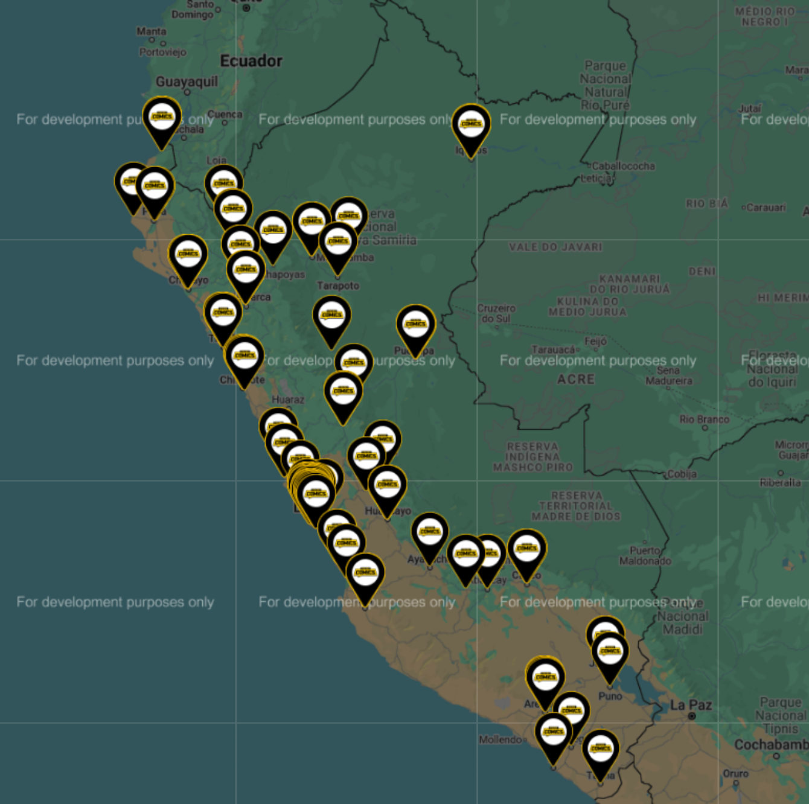
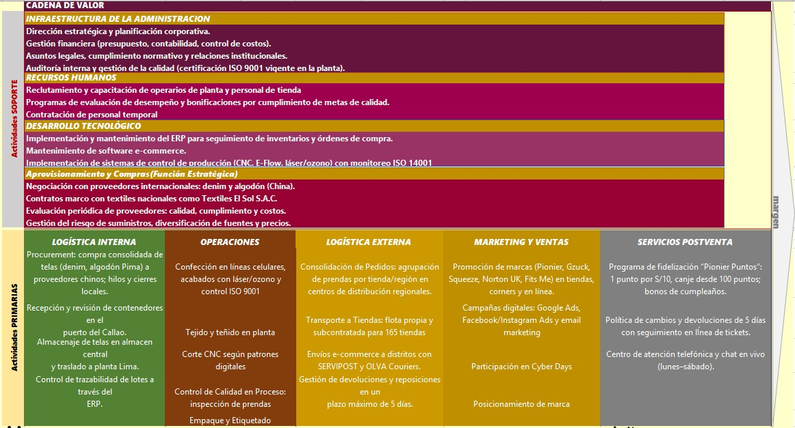
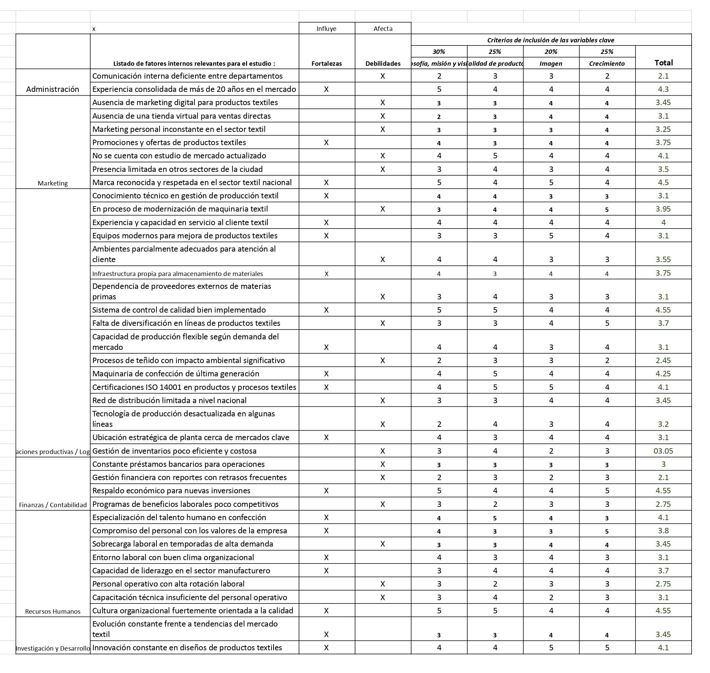
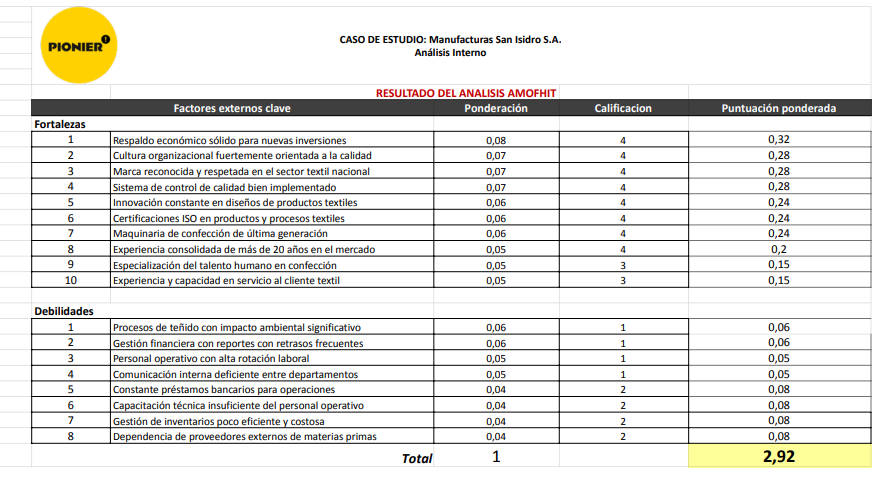

1. Aspectos Generales de la Empresa
1.1 Reseña Histórica de la Empresa
Manufacturas San Isidro S.A.C. (MASISAC) tiene sus orígenes en la década de 1970, cuando el señor Segundo Luis Díaz Díaz, natural de Cajamarca, llegó a Lima con la intención de estudiar en la universidad. Al no conseguir ingreso a la carrera deseada, se dedicó a la venta de ropa femenina en puestos informales. En 1978, con un capital modesto, instaló un pequeño taller de confección en la Galería Ucayali. Un año después, registró la marca Pionier, inicialmente orientada a ropa infantil y luego expandida a jeans para toda la familia, destacando por su buena calidad a precios accesibles.
El 1 de diciembre de 1987, se constituyó formalmente la empresa bajo la razón social Manufacturas San Isidro S.A.C. (RUC 20101298851), operando legalmente desde entonces. Durante los años 90, bajo la dirección de la segunda generación, se construyó una planta en Zárate (Arequipa), lo que permitió aumentar la capacidad productiva. En esta etapa también nacieron nuevas marcas como Gzuck, Squeeze, Norton UK y Fits Me, ampliando el portafolio de productos. Pionier comenzó a posicionarse en corners de tiendas por departamento como Saga Falabella y Ripley.
A inicios de los 2000, MASISAC adoptó el modelo de fast fashion, renovando sus colecciones cada quince días e incorporando tecnologías como corte CNC, E-Flow, láser y ozono para mejorar eficiencia y sostenibilidad en el proceso textil. En 2010, la marca ya contaba con más de 150 tiendas propias en todo el país y exportaba a Ecuador y Bolivia, respaldada por un sistema ERP y un centro logístico en Callao.
Desde 2016, la empresa enfrentó nuevos retos ante la llegada de marcas internacionales y el crecimiento del comercio electrónico. En 2021 y 2022, recibió sanciones de INDECOPI, que motivaron la implementación de un plan de mejora en etiquetado y atención posventa. En 2023, MASISAC lanzó su plataforma de e-commerce sobre Magento 2, alcanzando 1.5 millones de visitas en 72 horas durante los Cyber Days.
En 2024, con 165 tiendas en operación y más de 1,600 colaboradores, MASISAC sigue consolidando su liderazgo en el sector textil peruano. Ese mismo año, inició una línea piloto eco-friendly, como parte de su compromiso con la sostenibilidad y la innovación.
1.2 Ubicación Geográfica
Manufacturas San Isidro S.A.C. (MASISAC), que opera como Grupo Pionier, tiene su sede administrativa principal en Jr. Azángaro N° 246, Cercado de Lima, donde se encuentran las oficinas estratégicas como Gerencia General, Finanzas, Recursos Humanos, TI y Planeamiento. Esta ubicación en el centro histórico de Lima facilita el acceso a entidades clave.
Su principal planta industrial, operada por su subsidiaria MODIPSA, está en el Parque Industrial de Zárate, Arequipa, donde se realizan todos los procesos textiles, asegurando una cadena de valor integrada.
Además, MASISAC cuenta con una red logística descentralizada que incluye:
- Centro de Distribución Lima Norte (Comas)
- Centro Logístico del Callao (vinculado al puerto)
- Almacenes Regionales en Trujillo, Chiclayo y Cusco
1.3 Locales, Filiales, Mapa de Lugares Geográficos
Manufacturas San Isidro S.A.C. (MASISAC) bajo las marcas del grupo Pionier, distribuidas estratégicamente en diferentes zonas del territorio nacional.
- Zona Norte:
- Pionier – Chimbote: Av. Víctor Raúl Haya de la Torre 4522–4578–4694–4794, Int. L69–L70, Chimbote, Santa, Áncash.
- Pionier – Nuevo Chimbote (Real Plaza): Carretera Panamericana Norte Km 424, Int. LC105A–LC106A, Nuevo Chimbote, Santa, Áncash.
- Pionier – Piura (Plaza del Sol): Av. Grau 1460, Int. LC134–LC138, Piura.
- Pionier – Cajamarca II (Mega Plaza): Jr. Sor Manuela Gil 151, Int. LC223–LC225, Cajamarca.
- Zona Centro:
- Pionier – Huancayo: Calle Real 673–677, Huancayo, Junín.
- Pionier – Huancayo (Real Plaza): Av. Ferrocarril 1035, Int. LC220, Huancayo, Junín.
- Pionier – Ayacucho: Jr. 9 de Diciembre 197, Huamanga, Ayacucho.
- Zona Sur:
- Pionier – Arequipa Mall: Av. Porongoche 500, Int. A1081–A1083, Arequipa.
- Pionier – Lambramani: Av. Lambramani 325, Lt. 2, Int. 231, Arequipa.
- Pionier – Cayma (Aventura Plaza): Av. Ejército 793, Int. A-2030, Cayma, Arequipa.
- Lima Metropolitana:
- Pionier – Chorrillos (Real Plaza): Av. Guardia Civil 1035, Int. L134, Chorrillos, Lima.
- Pionier – Plaza Norte: Av. Alfredo Mendiola 1400, Int. LI-105, Independencia, Lima.
- Pionier – La Molina: Calle Los Higos 164, Urb. Ampliación Residencial Monterrico, La Molina, Lima.
- Pionier – Villa María del Triunfo (Real Plaza): Av. Pachacútec 3721, Int. L32, Villa María del Triunfo, Lima.
- Zona Oriente (Selva):
- Pionier – Iquitos: Calle Próspero 513, Iquitos, Loreto.
- Gzuck – Iquitos (Mall Aventura): Av. José A. Quiñones, Lote Las Ninfas 2, Int. B-2022, Urb. San Juan Bautista, Iquitos, Loreto.
- Norton – Iquitos (Mall Aventura): Av. José A. Quiñones, Lote Las Ninfas 2, Int. B-2020, Urb. San Juan Bautista, Iquitos, Loreto.
1.3.1 Mapa de ubicaciones
1.4 Logo
El logotipo corporativo de Manufacturas San Isidro S.A.C. (también conocido como MASI S.A.C.) presenta:
- Tipografía: Letras mayúsculas con un estilo sans-serif personalizado.
- Color: Azul intenso (Pantone cercano al 286 C) tanto en la denominación ‘MASI S.A.C.’ como en el texto secundario.
- Composición: En la línea principal, “MASI” aparece con un corte diagonal en la “A” que le da dinamismo. A la derecha, en menor tamaño, “S.A.C.”.
- Debajo, en cuerpo más pequeño y centrado, “MANUFACTURAS SAN ISIDRO S.A.C.”
Pionier: “PIONIER!” en mayúsculas con signo de exclamación, transmite energía y modernidad, reflejando su enfoque en moda urbana juvenil desde 1979.
1.5 Número de Trabajadores
Manufacturas San Isidro S.A.C. cuenta con 1622 colaboradores a nivel nacional, distribuidos de la siguiente manera:
- Producción (800 empleados, 49,3 %): Operarios de línea, técnicos de mantenimiento, inspectores de calidad y supervisores en la planta textil de Zárate, encargados de corte, costura, acabado y control de calidad.
- Ventas y Tiendas (500 empleados, 30,8 %): Vendedores, cajeros, supervisores de zona y gerentes en aproximadamente 165 tiendas propias, además del equipo de atención al cliente en canales digitales.
- Logística y Almacenes (150 empleados, 9,2 %): Personal encargado de gestionar inventarios, recibir insumos en el Centro Logístico del Callao, coordinar despachos a almacenes regionales (Trujillo, Chiclayo, Cusco) y distribuir mercancías a las tiendas.
- Administración y Finanzas (90 empleados, 5,6 %): Contadores, analistas financieros, tesoreros y asistentes administrativos en la sede central en Lima, responsables de planificación presupuestaria, control de costos y elaboración de reportes financieros.
- Recursos Humanos y Capacitación (50 empleados, 3,1 %): Equipo a cargo de reclutamiento, selección, capacitación, evaluaciones de desempeño y bienestar laboral, con presencia en Arequipa, Lima y sedes regionales.
- Tecnología de la Información (32 empleados, 2,0 %): Encargados de administración del ERP corporativo, plataforma de comercio electrónico, infraestructura de red y sistemas de videovigilancia, con sede principal en Lima y soporte remoto a la planta de Arequipa.
Durante temporadas de alta demanda (campañas de Cyber Days o rebajas), la empresa suele contratar personal temporal en las áreas de Producción y Ventas, lo que incrementa la dotación total en un 10–15 % para atender picos de producción y venta.
1.6 Razón social y jurídica
Su razón social de la empresa es Manufacturas San Isidro S.A.C., entidad jurídico-formal que agrupa las operaciones de manufactura, comercialización y distribución de las marcas del Grupo Pionier.
- Nombre comercial: MASISAC (Grupo Pionier)
- RUC: 20101298851
1.7 Mercados que abastece
1.7.1 Mercado interno
Manufacturas San Isidro S.A.C. abastece más de 165 tiendas propias distribuidas en Lima y las principales ciudades del país (Arequipa, Trujillo, Chiclayo, Cusco, Huancayo, Juliaca, Huánuco, entre otras). En estas tiendas se comercializan sus marcas Pionier, Gzuck, Norton y Squeeze, atendidas por equipos de vendedores, supervisores de zona y gerentes. Además, mantiene alianzas con cadenas de retail como Real Plaza, incorporando corners de aproximadamente 70 m² en algunos centros comerciales de provincias. De forma complementaria, cuenta con un canal de e-commerce propio y presencia en marketplaces locales, lo que le permite alcanzar consumidores en zonas donde no hay puntos físicos y ofrecer venta directa a nivel nacional las 24 horas del día.
1.7.2 Exportación
La empresa registra exportaciones constantes hacia Estados Unidos, destinos europeos (Bélgica, Reino Unido) y mercados asiáticos (China, Hong Kong, Singapur). En 2022, sus envíos de prendas y calzado superaron los US$ 5,400,000 FOB, transportando más de 200,000 kg de mercancía textil. Para ello, trabaja con socios logísticos en Puertos del Callao, desde donde consolidan contenedores y despachan a agentes en los distintos países destino. Estas operaciones incluyen principalmente prendas de vestir (códigos arancelarios HS 6201 y 6202) y calzado (HS 6402 y 6403), adaptándose a exigencias de calidad y etiquetado de cada mercado.
1.7.3 Logística y distribución
El Centro Logístico en el Callao actúa como núcleo para la recepción de insumos importados y la consolidación de mercancías terminadas. Desde allí se coordinan despachos a almacenes regionales ubicados en Trujillo, Chiclayo y Cusco. Estos almacenes sirven a las tiendas propias y a socios minoristas, garantizando rotación continua de inventarios. En temporada alta (campañas de Cyber Days o rebajas), se refuerzan las operaciones con contrataciones temporales en producción y tiendas, incrementando la capacidad de abastecimiento en un 10 – 15 por ciento para afrontar picos de demanda.
1.8 Principales proveedores
Manufacturas San Isidro S.A.C. (MASISAC) combina estratégicamente proveedores internacionales de textiles y socios nacionales de insumos, respaldados por operadores logísticos globales, para garantizar eficiencia operativa y competitividad en el sector textil.
1.8.1 Proveedores internacionales:
- Chemical Fabric EP8157 (China): Principal proveedor de denim y poliéster teñido, con el 45% del total importado.
- Guangzhou Textile Co. (China): Suministra telas técnicas para la línea deportiva Gzuck.
- Suzhou Cotton Exporters (China): Provee algodón Pima y Tanguis certificado para la línea Fits Me.
- Hangzhou Dyeing Bleaching Co. (China): Realiza procesos sostenibles de teñido y acabados especializados con tecnologías como E-Flow y láser.
1.8.2 Proveedores nacionales:
- Textiles El Sol S.A.C. (Lima): Aporta el 35% de los hilos utilizados en producción.
- Confecciones Andina S.A.C. (Arequipa): Provee accesorios (cremalleras, botones) con tiempos de entrega ágiles.
- Tintorería Norte S.A. (Trujillo): Ejecuta acabados especiales para volúmenes reducidos.
1.8.3 Operadores logísticos:
- Maersk Line: Maneja el 70% del transporte marítimo desde China.
- COSCO Shipping y Hapag-Lloyd: Complementan con envíos rápidos y de alta confiabilidad.
- SERVIPOST y OLVA Couriers: Cubren la logística nacional, e-commerce y distribución en regiones clave.
1.8.4 Servicios complementarios:
- Smart Dye: Consultoría en procesos sostenibles de teñido y eficiencia hídrica.
- Software XYZ: Gestión integral mediante un sistema ERP que sincroniza operaciones logísticas y de abastecimiento.
1.9 Productos y Servicios Ofrecidos
Productos
- Denim y Tejido Plano (Marca Pionier):
- Jeans y pantalones casuales.
- Chalecos, shorts y poleras en drill.
- Chaquetas y sobretodos en franela.
- Tejido de Punto (Marcas Pionier y Fits Me):
- Poleras, camisetas y polos en algodón Pima.
- Chompas y sweaters en mezcla de algodón y acrílico.
- Tank tops y crop tops (línea Squeeze).
- Tejido Fantasía:
- Blusas y camisas en poliéster y mezclas sintéticas.
- Vestidos y faldas con forro interno.
- Accesorios:
- Cinturones, mochilas y carteras.
- Bufandas, gorras y pañuelos.
- Calzado deportivo y casual (líneas Gzuck y Norton UK).
Servicios
- Recojo en Tienda (Click Collect): Retiro disponible 48 horas después de la compra en línea; permite ahorro en costos de envío.
- Programa de Fidelización “Pionier Puntos”: 1 punto por cada S/ 10 gastados; canje disponible a partir de 100 puntos. Incluye beneficios adicionales en cumpleaños y preventas exclusivas.
- Política de Cambios y Devoluciones: Válida por 5 días hábiles con la prenda en perfecto estado y presentación del comprobante de compra.
- Entrega a Domicilio: Cobertura nacional (más de 1,800 distritos). Entregas en 24–48 horas en Lima y 48–72 horas en provincias. Envío gratuito por compras mayores a S/ 150.
- Atención al Cliente y Postventa: Soporte telefónico y por correo electrónico. Gestión de reclamos y seguimiento de pedidos desde la plataforma web.
1.10 Tecnología en la Empresa
(Sección pendiente de desarrollo. Puede incluir detalles sobre maquinaria, software ERP, herramientas de automatización o tecnologías sostenibles como E-Flow, láser, ozono, etc.)
1.11 Publicidad: Afiches y Página Web de la Empresa
- Página web: https://pionier.com.pe
- Redes sociales:
- Facebook: Pionier Perú
- Instagram: @pionierperu
- TikTok: @pionier.oficial
2. Análisis del Planeamiento Estratégico
2.1 Análisis de Visión, Misión y Valores de la Empresa
Misión
“Satisfacer las necesidades y expectativas de nuestros clientes con productos, marcas y servicios orientados a ellos, mediante un trabajo comprometido: ‘Vestir a las personas del Perú y el mundo con prendas de alta calidad’.”
- ¿Qué necesidad satisface? La confección y comercialización de prendas de vestir de alta calidad (jeans, ropa casual, deportiva y accesorios).
- ¿A quiénes satisface la necesidad? Consumidores nacionales (jóvenes de 15–39 años y familias peruanas) e internacionales (segmentos en Ecuador y Bolivia).
- ¿Cómo satisface estas necesidades? A través de manufactura propia (MODIPSA), tecnologías sostenibles (E-Flow, láser, ozono), una red de 165 tiendas, e-commerce y alianzas mayoristas.
- Propósito: Proyectar la marca Pionier como un referente de calidad accesible en el rubro textil peruano e internacional.
Visión
“Ser líderes en el Perú y reconocidos internacionalmente. Posicionarnos como una empresa de vanguardia, innovadora y que marque la tendencia de moda a todos los niveles.”
- Inspiradora: Establece un objetivo ambicioso que motiva a colaboradores y partes interesadas, al proponer liderazgo y posicionamiento en moda.
- Clara y concisa: Define de forma directa los objetivos de liderazgo, innovación y tendencia. Aunque breve, comunica múltiples enfoques estratégicos.
- Ambiciosa pero realista: Apuesta por liderazgo nacional e internacional en moda, de forma innovadora. Pese a su ambición, se percibe viable dentro de la competitividad actual del sector textil.
- Relevante y adaptativa: Se adapta a los cambios del mercado global al destacar la innovación, vanguardia y moda, alineándose a tendencias contemporáneas.
2.2 Propuesta de Misión y Visión para la empresa PIONIER
2.2.1 Propuesta de Misión
“Revolucionamos la moda con prendas de alta calidad, diseño único y una firme apuesta por la sostenibilidad, para vestir a clientes que buscan estilo, comodidad y responsabilidad, en Perú y más allá.”
2.2.2 Propuesta de Visión
“Ser la marca que define las tendencias de moda, inspirando a personas alrededor del mundo con productos innovadores, responsables y llenos de estilo, convirtiéndonos en líderes en sostenibilidad y calidad.”
2.3 Estructura Organizacional
La estructura organizacional de MASISAC se divide en tres niveles principales:
- Nivel Táctico: Gerentes de áreas funcionales que definen estrategias específicas para sus departamentos y supervisan su ejecución.
- Nivel Operativo: Personal técnico, auxiliares, supervisores y asistentes que ejecutan las actividades diarias de manufactura, logística, ventas y soporte.
2.4 Análisis de la Cultura Organizacional
La cultura de Pionier se caracteriza por su orientación al cliente, dinamismo y fuerte identidad corporativa basada en la innovación y el trabajo en equipo.
- Compromiso con el Cliente: Los trabajadores son capacitados para ofrecer un trato cercano, eficiente y empático. Este enfoque ha generado fidelización y un posicionamiento positivo en el mercado.
- Trabajo Colaborativo: El enfoque de la empresa promueve la cooperación entre áreas. Las reuniones interdepartamentales y el flujo continuo de información fortalecen la cultura de colaboración.
- Ambiente Laboral: El ambiente interno es dinámico y se alienta la creatividad. Los espacios de trabajo son cómodos y están adaptados para promover el rendimiento, el orden y el bienestar de los empleados.
- Reconocimiento Interno: Pionier destaca el esfuerzo individual y colectivo mediante reconocimientos mensuales y actividades internas que refuerzan el sentido de equipo.
- Enlace con la Sociedad: La empresa mantiene una presencia activa en actividades sociales, colaboraciones con organizaciones locales y campañas solidarias, reafirmando su rol como actor social responsable.
2.5 Análisis del Manejo de la Calidad en la Organización
Normas y Buenas Prácticas:
- La planta de confección opera bajo un sistema de gestión documentado (certificación ISO 9001) que asegura la estandarización de procesos desde el diseño hasta el empaque.
- Se mantienen manuales de inspección y listas de verificación en cada fase: corte, costura y acabado.
Control de Insumos:
- Todos los rollos de tela y accesorios entrantes se someten a pruebas de color, gramaje y resistencia.
- Los proveedores son evaluados semestralmente en función de la calidad del producto, puntualidad de entrega y cumplimiento de especificaciones.
Monitoreo de Procesos:
- Inspecciones en línea con muestreos automáticos cada 100 prendas, manteniendo una tasa de defectos.
- Protocolos de calibración de maquinaria CNC y equipos de teñido (E-Flow, láser) para garantizar uniformidad.
Formación Continua:
- Programas de capacitación anual en control estadístico de calidad, manejo de sistemas ERP y atención al cliente.
- Talleres periódicos sobre normativas de seguridad y cuidado ambiental en planta.
Satisfacción del Cliente:
- Encuestas postventa (web y redes sociales).
- Sistema de gestión de reclamos con seguimiento por ticket y resolución en un máximo de 5 días hábiles.
- Revisión trimestral de resultados y planes de acción para incorporar sugerencias en la próxima colección.
2.6 Análisis FODA - Análisis INTERNO: Análisis Fortalezas y Debilidades
2.6.1 Cadena de valor de Porter
2.6.2 Análisis AMOFHIT
2.6.3 EFI
2.7 Análisis FODA - Análisis EXTERNO: Oportunidades y Amenazas
2.7.1 Análisis del Microentorno (5 Fuerzas de Porter)
Poder de negociación de los proveedores
Nivel: Medio. La empresa textil cuenta con diversas opciones de proveedores tanto locales como internacionales, pero algunos insumos especializados tienen proveedores limitados.
Factores que aumentan el poder de negociación de los proveedores:
- Concentración de proveedores especializados en fibras premium (algodón Pima, alpaca).
- Diferenciación de materias primas de alta calidad — el algodón Pima peruano es considerado "el mejor del mundo" por sus condiciones ideales de cultivo.
- Alto costo de cambio debido a certificaciones y procesos de calidad establecidos.
- Dependencia de proveedores internacionales para maquinaria y tecnología textil.
- Competencia del algodón de bajo coste de China e India, que presiona a los proveedores locales a ser más competitivos.
Estrategias para reducir el poder de negociación de los proveedores:
- Diversificar la base de proveedores geográficamente (empresas como Tejimundo, Nomotex, Lyon Apparel).
- Desarrollar relaciones a largo plazo con múltiples proveedores especializados en algodón Pima.
- Negociar contratos en bloque y por volumen, aprovechando la integración vertical del sector.
- Desarrollar capacidades internas para producir algunos insumos básicos.
Amenaza de nuevos entrantes
Nivel: Medio. Las barreras de entrada son moderadas debido a la necesidad de capital inicial y conocimiento técnico, pero las políticas gubernamentales favorables facilitan el ingreso.
Factores que aumentan la amenaza de nuevos entrantes:
- Políticas gubernamentales de promoción de exportaciones que facilitan el acceso al mercado internacional.
- Disponibilidad de mano de obra calificada en el sector textil.
- Acceso a financiamiento para nuevas empresas del sector.
- Tendencia de crecimiento del sector que mostró +3.1% en enero y +4.0% en febrero de 2024.
- Acceso a materias primas de calidad reconocida mundialmente (algodón Pima).
Estrategias para reducir la amenaza de nuevos entrantes:
- Invertir en automatización y tecnología avanzada (Industria 4.0).
- Desarrollar fuertes relaciones con marcas internacionales como Lacoste, Hugo Boss y Lululemon.
- Obtener certificaciones ambientales exclusivas que requieren tiempo e inversión.
- Construir economías de escala en producción, aprovechando la integración vertical.
Amenaza de productos sustitutos
Nivel: Medio. Existen alternativas disponibles como textiles sintéticos y productos importados, pero los textiles peruanos tienen ventajas en calidad y origen.
Factores que aumentan la amenaza de productos sustitutos:
- Disponibilidad de textiles sintéticos de bajo costo.
- Productos textiles asiáticos con precios competitivos de China e India.
- Innovación en materiales alternativos no textiles para aplicaciones técnicas.
- Percepción del cliente de productos sustitutos como equivalentes en funcionalidad.
- Presión de precios internacionales que hace atractivos los sustitutos más baratos.
Estrategias para reducir la amenaza de productos sustitutos:
- Aumentar la diferenciación basada en la calidad superior del algodón Pima peruano.
- Desarrollar textiles técnicos especializados para prendas de alta gama.
- Obtener certificaciones ambientales que agreguen valor y justifiquen precios premium.
- Fortalecer la marca "Hecho en Perú", aprovechando el prestigio internacional del algodón Pima.
Rivalidad entre los competidores existentes
Nivel: Alta. La industria textil peruana es altamente competitiva, con múltiples empresas establecidas compitiendo por los mismos mercados de exportación y clientes internacionales.
Factores que aumentan la rivalidad entre los competidores existentes:
- Gran número de empresas textiles establecidas (Tejimundo, Nomotex, Lyon Apparel, entre otras).
- Productos con diferenciación limitada en segmentos masivos.
- Competencia intensa por mercados internacionales como Estados Unidos y Europa.
- Sector que experimentó una caída del 18% en exportaciones en 2023, intensificando la competencia por clientes.
- Alta integración del sector que permite a muchas empresas competir en todo el proceso productivo.
- Capacidad instalada similar entre los principales competidores del sector.
Estrategias para reducir la rivalidad entre los competidores existentes:
- Especializarse en nichos de mercado específicos (textiles técnicos, sostenibles, prendas de lujo).
- Desarrollar alianzas estratégicas con otros productores peruanos para fortalecer la oferta exportable.
- Invertir en innovación de materiales y procesos que permitan diferenciación real.
- Enfocarse en mercados geográficos diferenciados como Argentina, Brasil, Colombia, Chile, Ecuador y Venezuela.
- Mejorar la eficiencia operativa mediante automatización para competir mejor en precios.